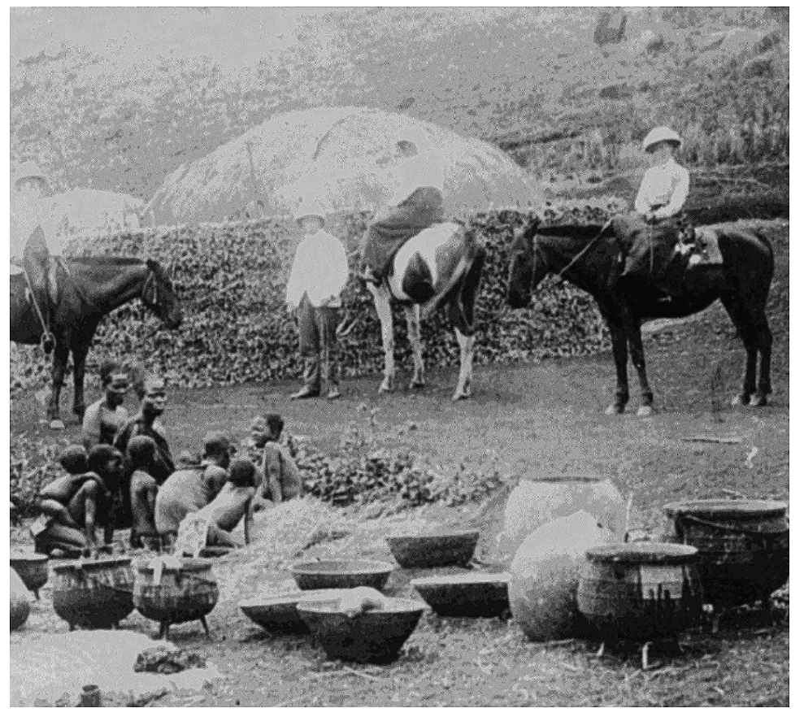

经济影响
瓜分非洲出于明显的经济动机，因此，毫不奇怪，伴随而来的是剧烈的经济变化。欧洲不再满足于沿海港口的一船船奴隶。工业化了的西方不再需要奴隶，因为技术已提供了大量的机械。西方需要的是在非洲内地所发现的原料，因为它现在拥有提取这些原料的技术手段。
随着在金伯利发现金刚石（1867年）和在威特沃特斯兰发现黄金（1884年），对非洲资源的开发迈出了十分重要的第一步。在罗得西亚（今津巴布韦）和刚果也发现了同样大量的矿产财富：前者是金和铜，后者是金、铜和金刚石。西海岸的许多地区都盛产热带森林产品，如棕榈油、橡胶和象牙等。根据探险者的报告，我们得知，内地有些高原不仅气候宜人，而且土地肥沃。结果，欧洲移民者蜂拥而入，尤其是南罗得西亚和东非。不久以后，他们就在这些地区获得了最理想的农业地产。
为了运输当时生产的矿物和农产品，欧洲人着手在非洲铺设铁路网，正如他们早先在亚洲所做的那样。铺设这些铁路是为了便利产品出口，而不是为了促进经济的全面发展。在扩大生产和修建交通工具的刺激下，贸易达到了使传统的物物交换让位于货币制度的程度。非洲人不再用奴隶、沙金、羽毛和象牙同欧洲人交换盐、料器、布匹、朗姆酒和杜松子酒等。到19世纪末时，英国银币、奥地利元和美元已在这里普遍使用。
所有这些经济上的发展自然对本土民族产生了深远影响。气候温和的高原区的居民由于土地被白人移民侵占，受到的影响最深。在某些情况下，整片地区被划为白人的保留地，即便是在闲置的状况，非洲人也不能在那里耕种。因而，非洲人不得不在白人的种植园里劳动，领取工资；有些人甚至就“定居”在白人农场主的土地上，为他们劳动，以取得为自己耕种一小块土地的优先权。在其他地区，非洲人不得不离开自己的家园，到矿山上去干活。如果非洲人拒绝提供种植园和矿山所需要的劳力，那么，白人就会采用各种强迫劳动的方法。最通常的方法是征收人头税，迫使非洲人为了挣钱交税而去干活。上述种种发展削弱了非洲人传统的自给自足经济。他们不再仅仅为养活自己及家庭而工作。非洲人日益被卷入货币经济中，并受到世界经济形势的影响。因此，欧洲经济影响的结果是双重的：一是使非洲人卷入世界范围的货币经济中；二是直接或间接地使他们从属于在任何地方都是“老板”的白人。
文化影响
同商人、投资者、移民一起从欧洲来的还有欧洲的传教士。他们对非洲文化有深远的影响，因为他们是最早有意识地试图改变非洲文化的欧洲人。其他人对非洲文化的影响是间接和偶然的，如他们强迫非洲人离开祖先的村庄、到城市或矿山去工作时的情况就是如此。但传教士却是带着改变非洲人生活方式的公开目的来到这里的，为了实现这一目的，他们运用了三大工具：教育、医学和宗教。
提供西式教育和西方思想的学校是每个传教站的必备项目。这些学校特别有影响，因为大多数殖民政府都将教育交给了传教士。在许多方面，教会学校就其影响而言是建设性的：他们经常教学生如何建造较好的房屋，如何改进自己的农业方法，如何遵守健康和公共卫生的基本原理。他们不仅向学生传授欧洲语言，还教学生用非洲语言进行阅读和写作。传教士改变了非洲语言的书面形式，从而为非洲本土文学打下了基础。绝大多数选择文字生涯的非洲人都在教会学校受过教育。

图232 传教士到一个祖鲁村庄访问。19世纪的欧洲和美国充溢着“在我们的时代向全世界宣讲福音”的工作热情，在非洲进行传教就是这一热情的一个主要发泄渠道。
另一方面，这些学校不可避免地对非洲人民产生了一种破坏性的影响；它们常常教导学生，传统的生活方式是原始的、错误的。经过一段时间之后，这些学生不太听从父母和长辈的教导，而更多地听从他们认为应予以尊敬的欧洲老师的教导。此外，教会学校使用的是欧洲课本，讲授欧洲多于讲授非洲。事实上，在法国殖民地中使用的早期历史教科书就是以讲述“我们的祖先高卢人”的课文开头的。教会教育鼓励个人主义，这与非洲人的村社生活方式格格不入。毫不奇怪，受过几年此类教育的非洲人通常都不愿意返回他们的村庄。相反，他们在殖民政府、传教团或私人企业中寻找工作，从而进一步地脱离了他们的传统文化。
传教团还将医学知识和医疗器材带入非洲，挽救了许多非洲人的生命。不过，除了救人之外，医学还迫使非洲人对有关致病原因和死亡原因的传统思想提出了疑问。白人甚至能在非洲人正式祈求神灵但却毫无作用之后将病人治好。因此，人们不再指望靠传统的宗教来应付一切紧急情况和提供所有的答案。尽管大多数非洲人仍坚持他们过去的信仰，但传统的宗教已不再像以前那样有效地将非洲人的整个生活方式结成一体。
医学医生和祈雨医生
西方传教士给非洲带去的不仅是新的宗教，还有新的文化。新旧之间的冲突在戴维·利文斯敦（医学医生）和当地祈雨医生之间的下面这段争论中阐明得很清楚。*
祈雨医生：你不应该蔑视我们的知识，即使你对它一无所知。
医学医生：我不蔑视我不懂的东西；只是认为你们的说法——你们有能影响降雨的药物——是完全错误的。
祈雨医生：这恰恰是人们在谈论自己不懂的问题时的说话方式。当我们第一次睁开眼睛时，我们发现我们的祖先制造了雨，我们便步他们的后尘。你们为玉米来到库鲁曼，你们灌溉花园，你们可以不需雨；但是，我们不能这样做。如果我们没有雨，牲畜将失去牧场，奶牛将无法产奶，孩子们将羸弱而亡，妻子们将投奔能降雨、有玉米的其他部落，我们整个部落将解散和消亡，我们的火焰将熄灭。
医学医生：我非常同意你对雨的价值的评论，但是，你不可能用药物对云彩施魔法。你等着看到云彩来了，然后使用药物，并把只属于上帝的功劳归于自己。
祈雨医生：我用我的药，你用你的；你我都是医生，医生可不是骗子。你给病人下药，有时候上帝喜欢用你的药治愈他，有时候不——病人就死了。当他治愈时，你将上帝的功劳归于自己。我也是一样。有时上帝赐予我们雨水，有时候不。当他赐雨时，我们把它看作魔法的功劳。当病人死掉的时候，你并不会失去对药物的信心，不下雨的时候我也一样。如果你希望我不再使用我的药物，为什么继续用你的呢？
医学医生：我只在我力所能及的范围之内对活着的生物用药，即使没有治愈也能看到效果；你假装对云彩施魔法，可它高高在上，你的药根本无法对它起作用。通常，云彩在一个方向，而你的烟朝向另一个方向。上帝自己就可以命令云彩。只要尝试着耐心等待，没有你的药，上帝也会赐予我们雨水。
祈雨医生：嘛哈拉——嘛——咔啪——阿——阿！哎，直到今天早晨我始终认为白人是聪明的。谁曾尝试饥饿？死亡难道是愉快的吗？
医学医生：你能做到一个地点下雨而另一个地点不下吗？
祈雨医生：我不想尝试。我想看到整个国家一片苍翠，所有的人都很愉快；女人们拍手称快，向我献上花环以表谢意，她们高兴地喊叫着。
医学医生：我认为你既欺骗他们，也欺骗自己。
祈雨医生：好吧，那么，我们俩是一对（意为两人都是无赖）。
以上只是他们推理方法的一个例子；在这个例子中，一旦充分理解他们的语言，我们就能看出它们是相当尖锐的。这些争论是广为人知的。尽管我试图用我能想到的每一个方法去让哪怕是一个人相信他们是错误的，但却从未成功。他们相信作为魔法的药物是无限的。争论的总的结果是产生这样的印象：你对下雨这件事根本漠不关心；我们极不愿意看到这种认为我们对他们的福祉毫不在意的观念传播开去。
* D. Livingstone, Missionary Travels and Researches in South Africa（J. Murray，1857）, pp. 22-25.
政治影响
对传统部族当权者最严重、最直接的挑战来自非洲人中受过西方教育的那个阶层；这一阶层在几乎所有殖民地中逐渐发展起来。他们往往不仅向当地酋长挑战，而且向欧洲官员挑战。他们之所以这样做，是因为他们在西方学校吸收了某些政治思想，如个人自由和政治自由等；他们不明白为什么自由主义和民族主义的原则应用于欧洲而不应用于非洲。他们在受雇于政府和私人时经常遭到歧视，这一点也驱使他们发动政治运动。通常他们只能是欧洲公司中薪水微薄的职员，或者殖民地行政机构中职位最低的官员。此外，他们也无法明白为什么他们在获得所需的教育和经验之后，仅仅因为自己的黑皮肤而仍处于从属地位。基督教，尤其是新教，之所以会唤起民族主义，就因为它强调了个人的判断力和主动性。安哥拉一家杂志的作者阐明了这一点，他说：“告诉一个人他能随意解释《圣经》，就是向他暗示一种过分的自治权，使他变成反叛者……一个皈依新教的土著已倾向于——并不是说积极投身于——反抗文明的民族。”[3]
[推荐读物]
关于非洲通史，见第二十二章的参考书目和P. D. Curtin所著的全面概括该地区历史文献作品的著作African History, No. 56（Service Center for Teachers of History，1964）。最新的概括奴隶贸易的著作是E. Reynolds的有见识的研究Stand the Storm：A History of Atlantic Slave Trade（Shocken出版社，1985），该书提供了注释详尽的参考书目。Journal of African History，1989，Vol. 30，No. 1中专门研究“Atlantic Slave Trade: Scale，Structure and Supply”这一主题的特别部分是更新的研究。分析1500年以后1000万非洲人如何离开他们的故乡以及他们对新环境如何反应的著作有：M. L. Kilson和R. I. Rotberg所编的The African Diaspora：Interpretative Essays（Harvard University出版社，1976）和G. W. Irwin所著的Africans Abroad：A Documentary History of the Black Diaspora in Asia，Latin America and the Caribbean During the Age of Slavery（Columbia University出版社，1977）。关于废奴运动，见E. Williams所著的Capitalism and Slavery（University of North Carolina出版社，1944）；R. Anstey所著的The Atlantic Slavery Trade and British Abolition，1760-1810（Humanities出版社，1975）和S. Miers所著的Britain and the Ending of the Slave Trade（Longman出版社，1975）。
探险者们的描述提供了开发非洲大陆的丰富多彩的资料。M. Perham 和J. Simmons合著的African Discovery：An Anthology of Exploration（Faber & Faber出版社，1942）适当地收集了这类资料。C. Hibbert所著的Africa Explored：Europeans in the Dark Continent（Penguin出版社，1985）对非洲探险的历史作了有趣的概述。
概括瓜分非洲的著作有：A. Boahen所著的African Perspectives on Colonialism（John Hopkins University出版社，1987）和T. Pakenham所著的The Scramble for Africa（兰登书屋，1991）。最后，关于西方对非洲的影响的著作有：P. D. Curtin所编的Africa and the West：Intellectual Responses to European Culture（University of Wisconsin出版社，1972）；R. W. July所著的The Origins of Modern African Thought（Praeger出版社，1968）和A. D. Roberts所编的The Colonial Movement in Africa（Cambridge University出版社，1986）。
[注释]
[1]E. Reynolds, Stand the Storm：A History of the Atlantic Slave Trade（Schocken，1985）, p. 13.
[2]Cited by H. Russell, Human Cargoes（Longman，1948）, p. 36.
[3]Cited by T. Hodgkin, Nationalism in Colonial Africa（New York University，1957）, p. 98.